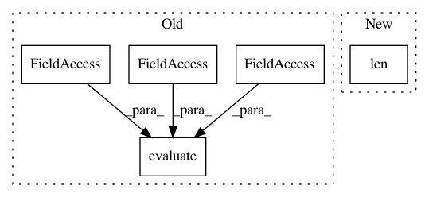

133e5b6a84e126cbcfbc5c11eeb6286185dbec2f,beginner_source/torchtext_translation_tutorial.py,,,#,464
Before Change
start_time = time.time()
train_loss = train(model, train_iterator, optimizer, criterion, CLIP)
valid_loss = evaluate(model, valid_iterator, criterion)
end_time = time.time()
epoch_mins, epoch_secs = epoch_time(start_time, end_time)
After Change
INPUT_DIM = len(de_vocab)
OUTPUT_DIM = len(en_vocab)
// ENC_EMB_DIM = 256
// DEC_EMB_DIM = 256
// ENC_HID_DIM = 512
// DEC_HID_DIM = 512
In pattern: SUPERPATTERN
Frequency: 3
Non-data size: 5
Instances
Project Name: pytorch/tutorials
Commit Name: 133e5b6a84e126cbcfbc5c11eeb6286185dbec2f
Time: 2020-12-02
Author: 6156351+zhangguanheng66@users.noreply.github.com
File Name: beginner_source/torchtext_translation_tutorial.py
Class Name:
Method Name:
Project Name: analysiscenter/batchflow
Commit Name: 8bb4e8322034fed85b7f81d96aebebaa08a9209c
Time: 2020-04-14
Author: alexey.a.kozhevin@gmail.com
File Name: batchflow/research/utils.py
Class Name:
Method Name: get_metrics
Project Name: pytorch/tutorials
Commit Name: 3128e13109c8766eafb413f2428bba976701e929
Time: 2020-12-02
Author: 6156351+zhangguanheng66@users.noreply.github.com
File Name: beginner_source/transformer_tutorial.py
Class Name:
Method Name: